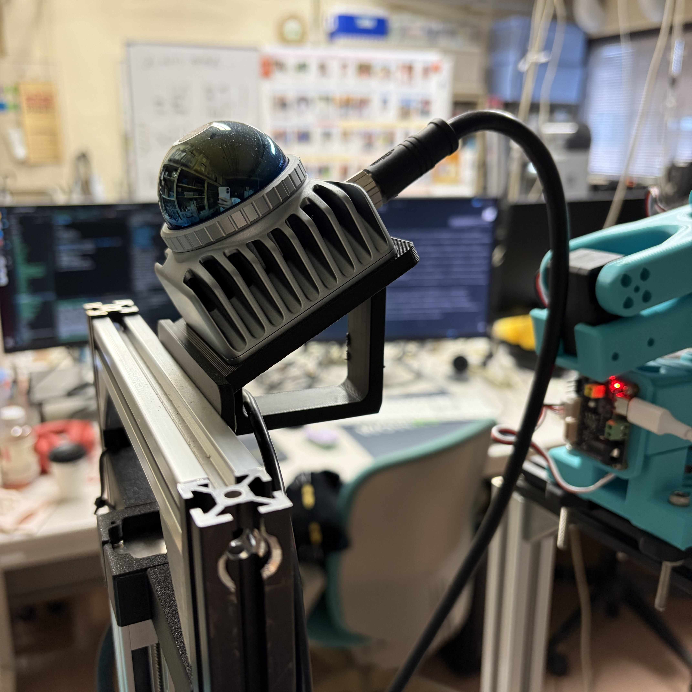
LiDAR とプリント製 Holder
前方支柱の上部横梁 → 黄色のプリント製くさび形 holder → やや後寄りの LiDAR。
モデルで見る ↗確認可能な製品資料と実機写真を掲載し、概念上の参考は区別して表示します。材質の色は実物の構造を表し、右側の根拠ラベルは情報源と形状精度を示します。

前方支柱の上部横梁 → 黄色のプリント製くさび形 holder → やや後寄りの LiDAR。
モデルで見る ↗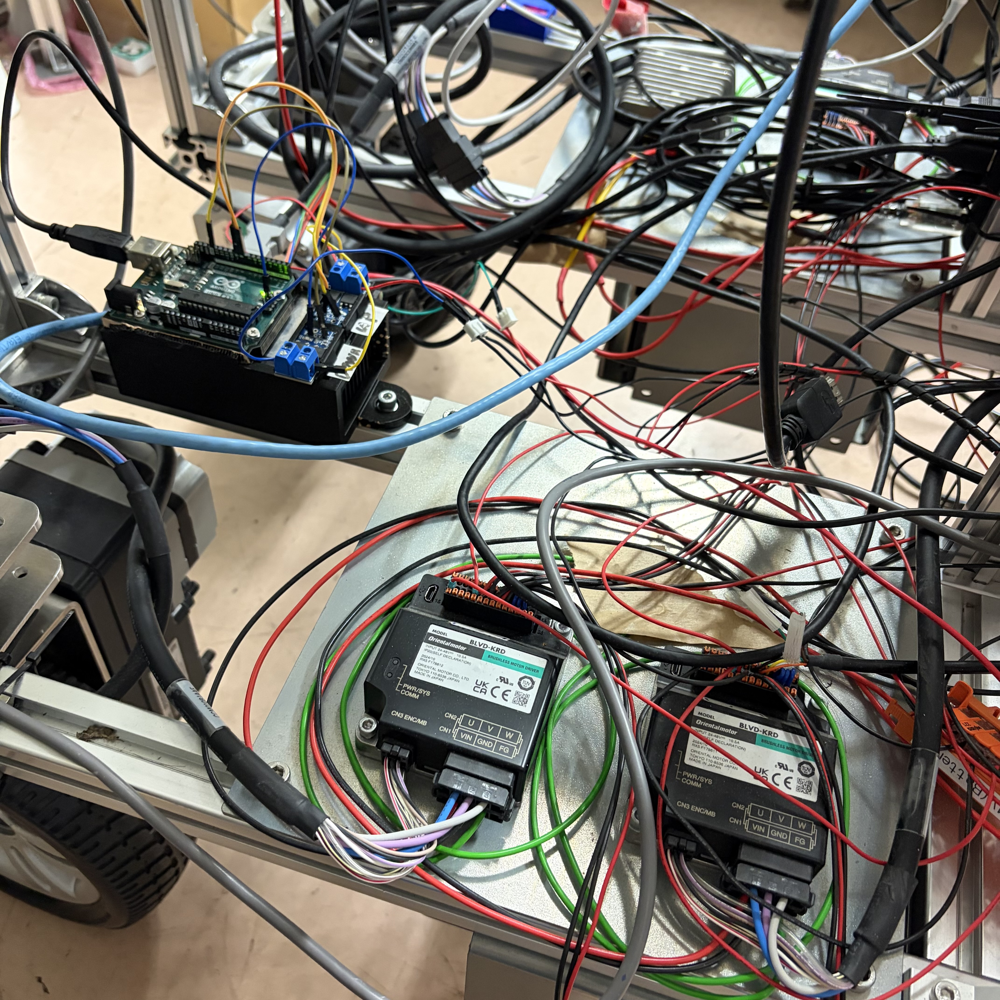
Arduino、MOSFET、RS-485 を集約配置。ドライバは 30 cm の取り付け面に搭載。
モデルで見る ↗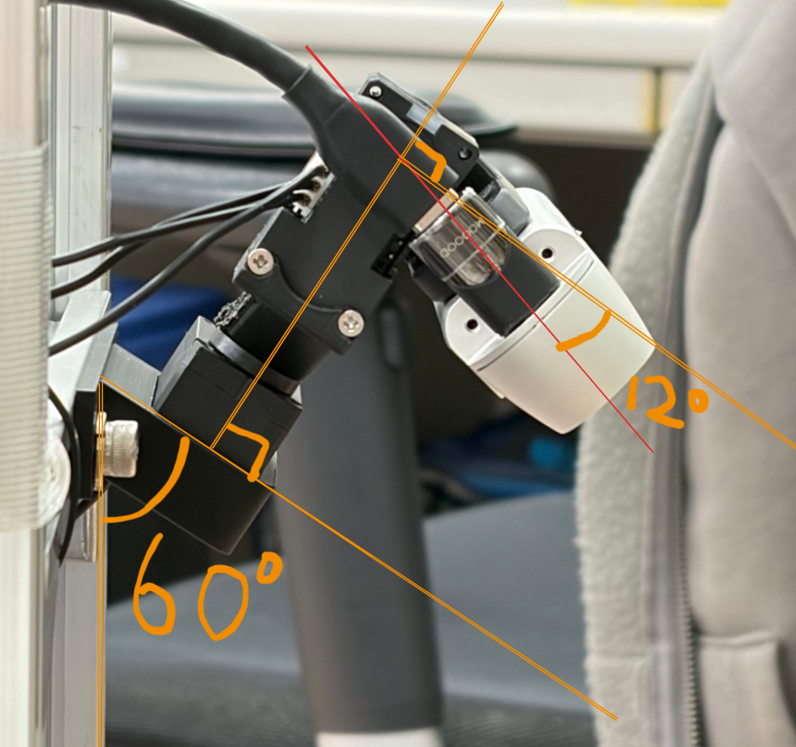
参考・概念情報60° / 120° は写真内の構造注記です。運用時の関節角と校正座標は別に保持します。
モデルで見る ↗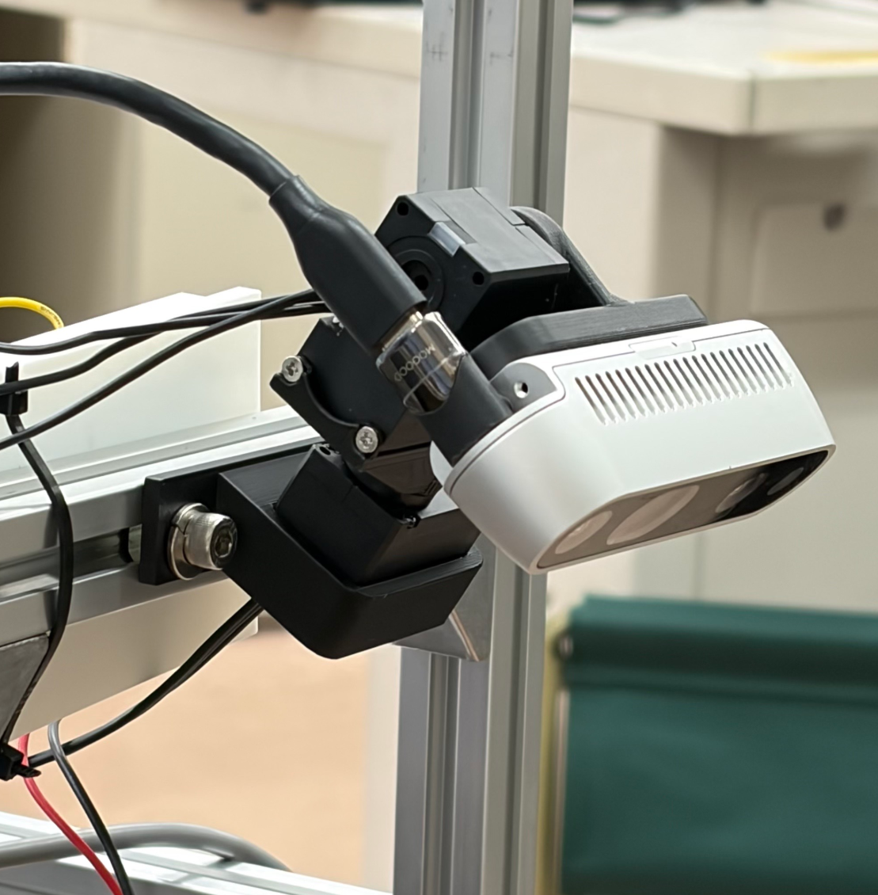
2 台の公式サーボ形状と黄色のプリント製接続部品。
モデルで見る ↗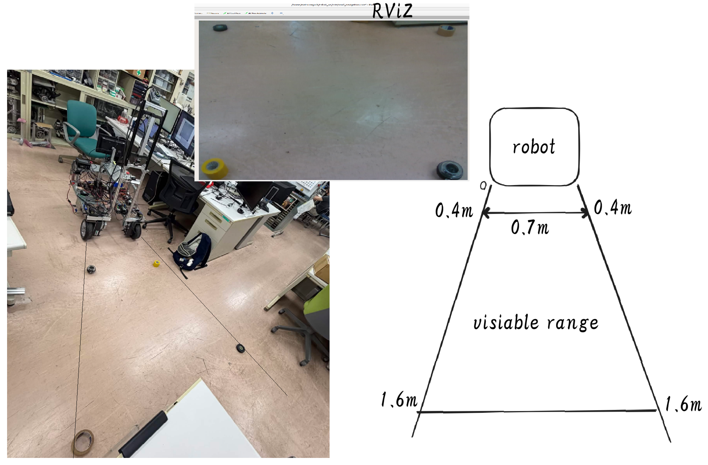
測定記録 / Measurement測定図：0.4–1.6 m、手前側の幅 0.7 m。取り付け角と遠方側の幅は直接記載されていません。
モデルで見る ↗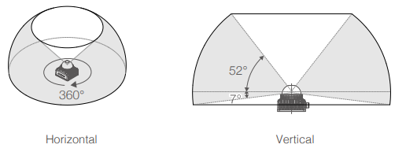
水平 360°、垂直 −7°…52° の視野。前方の遠い環境を捉えるため、傾斜させて取り付けます。
モデルで見る ↗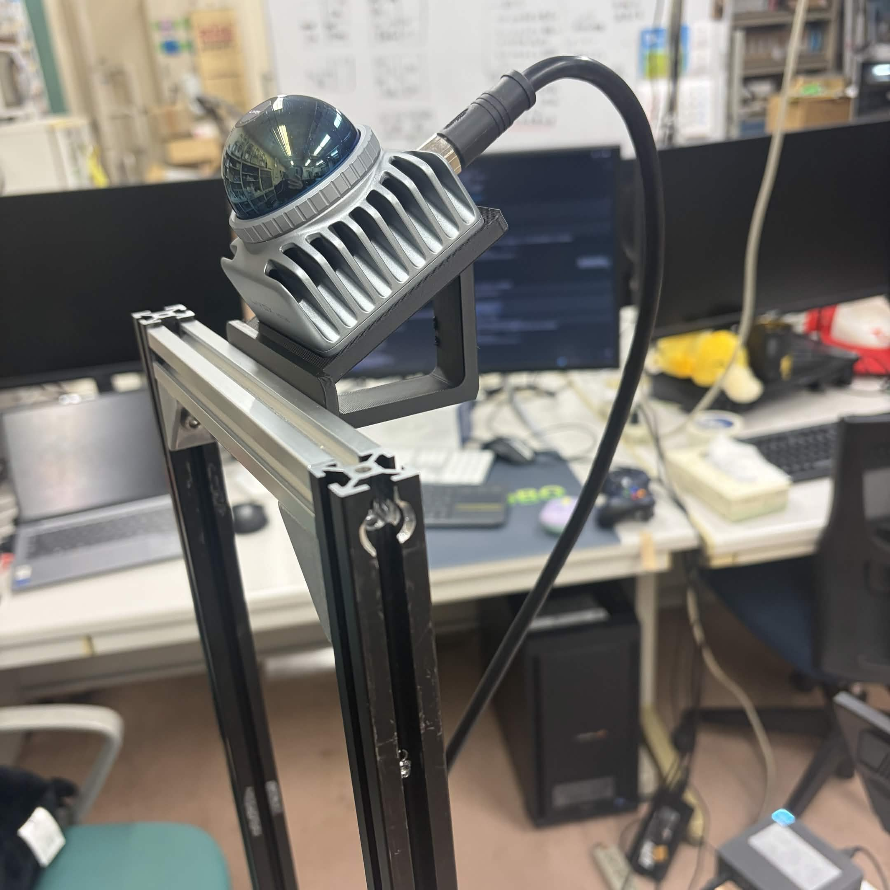
写真から開放形のブラケット構造を再構成。局部寸法は推定値です。
モデルで見る ↗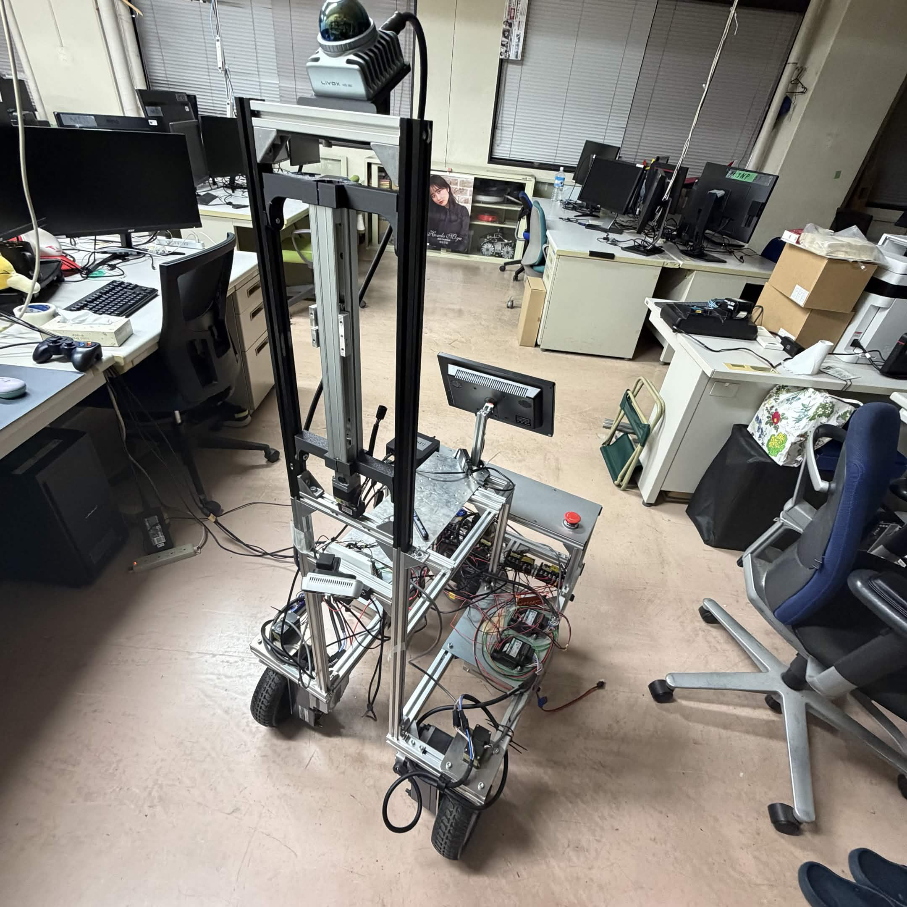
旧 Overview 画像は構造の参考として使用します。旧運用パラメータがこの版のフィードバックを自動的に上書きすることはありません。
モデルで見る ↗公式型式の情報と XL/XC-330 共通 STEP を取得済み。
公式の XM/H/D-540 共通 STEP を取得済み。
公式の本体 STEP と FOV STEP を取得済み。本体は 65 × 65 × 60 mm。
公式寸法図を取得済み。CAD ポータルのアクセス制限により STEP は未取得のため、寸法図から表示モデルを再構成しました。
公式外形図を取得済み。CAD プレビューが 403 を返したため STEP は未取得。
ユーザー指定製品：150 × 65 × 92 mm、0.9 kg。12 V と搭載数は操作者が確認済み。外観は製品画像から再構成しました。
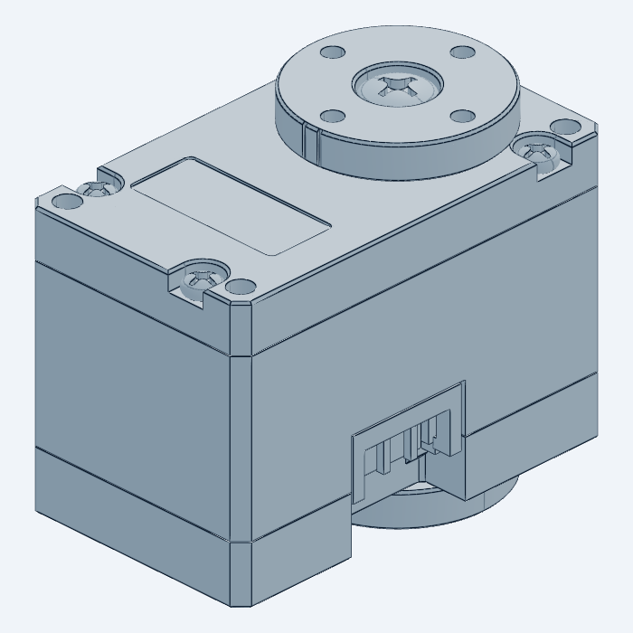
メーカーの元形状を保持し、組立には mm から m に変換した表示用メッシュを使用します。
CAD ビューアで開く ↗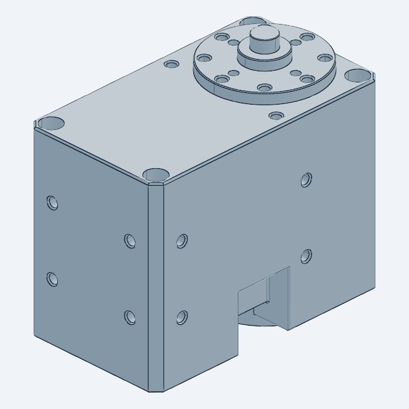
メーカーの元形状を保持し、組立には mm から m に変換した表示用メッシュを使用します。
CAD ビューアで開く ↗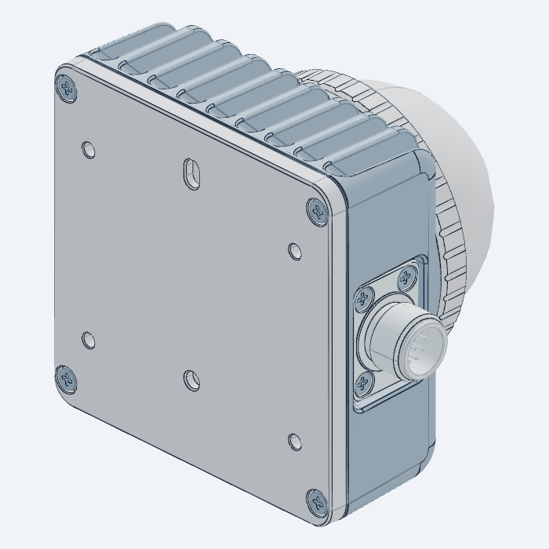
メーカーの元形状を保持し、組立には mm から m に変換した表示用メッシュを使用します。
CAD ビューアで開く ↗CAD ビューアはポート 3245 で動作する追加のローカルプロセスです。同梱の検査スナップショットはオフラインでも閲覧できます。XC330 の開いたシェル、MID-360 の開いたシェル/自己交差の検査結果は出典説明を参照してください。